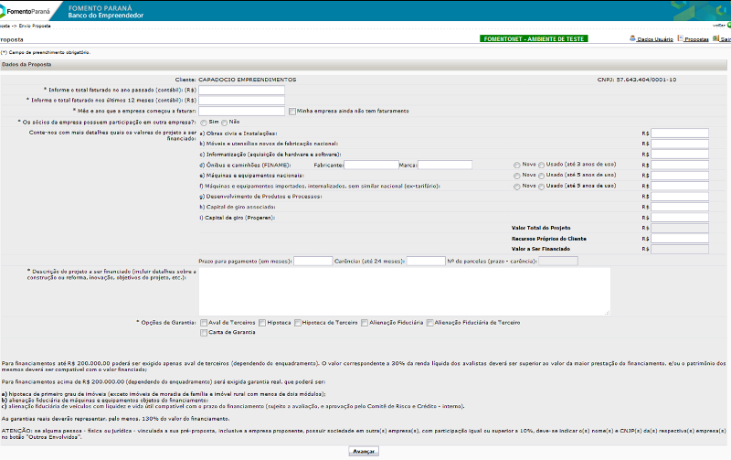

1. Iniciado - Fase do Cliente
Versão 30/01/2015
Atualizado em 07/01/2016
Atualizado em 20/04/2016 (adequação limites de financiamento micro e pequenas empresas)
O que é feito nesta etapa?
Nesta etapa o cliente detalha seu pedido de financiamento incluindo vários dados necessários para o encaminhamento da proposta para a fase de Enquadramento.
É importante que o cliente informe corretamente os valores pois será através dessas informações que o Analista na fase de Enquadramento fará seu parecer.
O próprio sistema possui mensagens automáticas orientando o preenchimento dos campos.
Quais são as informações que o cliente deve prestar para pedir o financiamento?
A tela apresentada ao cliente (vide abaixo) solicitará o preenchimento de todos os campos.

O que é Faturamento Contábil do ano passado?
É o valor registrado na contabilidade do cliente no ano anterior ao que estamos.
Caso a empresa seja optante pelo Simples, o valor informado deve ser obtido do Extrato do Simples.
Caso seja optante por outro regime tributário, deve informar o valor constante no Balanço da Empresa.
O que é Total Faturado nos últimos 12 meses?
É o valor que a empresa faturou, registrado em sua contabilidade, nos 12 meses anteriores contados a partir do mês passado.
Exemplo: Caso estejamos no mês de MARÇO, o valor informado deve corresponder ao período de MARÇO do ano passado até FEVEREIRO deste ano.
O que acontece quando a empresa marca a opção "Minha empresa ainda não tem faturamento"?
O sistema solicita a inclusão de um Plano de Negócios.
Oriente o cliente conforme item 7. Plano de Negocio
O que informar em Obras civis e Instalações?
O cliente deve informar o total que ele gastará com Construção ou Reforma do empreendimento.
Valor total significa o valor da obra independentemente de quanto será pago pelo cliente e quanto será financiado.
O cliente deve detalhar no quadro Descrição do Projeto, as principais características da obra que será realizada. Metragem, tipo de construção (alvenaria ou madeira), etc.
O que informar em Informatização?
O cliente deve informar o valor a ser gasto na compra de equipamentos de informática e softwares.
O que informar em Ônibus e Caminhões (FINAME)?
O cliente deve informar o valor obtido no orçamento da concessionária onde será adquirido o veículo.
Só pode Ônibus e Caminhões?
Além de ônibus e caminhões também podem ser financiados veículos UTILITÁRIOS, ZERO KM.
A lista de veículos que podem ser financiados está disponível no site do BNDES neste link
Quais são as regras para veículos usados?
Somente é possível financiar veículo usado, com até 03 anos de uso para valores ATÉ R$ 100 MIL.
Se o veículo usado custar mais que R$ 100 mil a diferença deverá ser contrapartida do cliente.
O que é código FINAME?
É um código atribuído pelo BNDES para os itens que o fabricante registrou no BNDES e que são passíveis de financiamento pelo linha FINAME
Se não existir código FINAME para o item, pode obter financiamento?
Não. Neste item Ônibus e Caminhões, caso não haja código FINAME não será possível obter financiamento.
O que informar em Máquinas e Equipamentos Nacionais?
O cliente deve informar o total que irá gastar com máquinas e equipamentos de fabricação nacional.
- Para financiamentos até R$ 100 mil, dispensado código FINAME.
- Para financiamentos MAIORES que R$ 100 mil será exigido código FINAME.
O que informar em Máquinas e Equipamentos importados?
O cliente deve informar o total que irá gastar com Máquinas e equipamentos importados.
Atenção! Orientações importantes sobre importados.
1 - Valor máximo de financiamento para importados é de R$ 100 mil.
2 - Não pode existir similar nacional.
3 - EX-TARIFÁRIO é um procedimento que o importador registra o item no Ministério da Ind. e Comércio que publica que aquele bem não tem similar.
4 - Se for INOVACRED pode financiar importado sem restrições.
O que informar em Desenvolvimento de Produtos e Processos?
O cliente deve informar o valor que irá gastar para desenvolver novo produto ou novo processo.
Exemplo de item financiável neste tópico é PLATAFORMA DE E-COMMERCE - custos com desenvolvimento da loja virtual.
Para financiamento de Desenvolvimento de Produtos e Processos para valores até R$ 100 mil veja orientações em 5. Linhas de Financiamento:Banco do Empreendedor MPE
Para financiamenot de Desenvolvimento de Produtos e Processos inovadores veja orientações em 5. Linhas de Financiamento:Inovacred
NÃO É desenvolvimento de produtos e processos:
1 - Empresa de comércio que quer passar a vender um novo produto produzido pela indústria. No comércio isso significar abrir novo mercado ou ampliar mercado existente e essa situação não é financiável pela linha.
2 - Despesas de Marketing das empresas como panfletos, campanhas publicitárias, etc. Essas despesas são classificadas como Capital de Giro.
O que informar em Capital de Giro Associado?
Capital de giro associado é quando o cliente deseja, além do financiamento dos itens considerados fixos (itens de "a" até "g") ele precisará também de capital de giro.
O sistema permite inclusão de giro associado conforme o valor do financiamento:
- Financiamentos MAIORES que R$ 100 mil
- Financiamentos ATÉ R$ 100 mil
O que informar em Capital de Giro (Progeren)?
O cliente deve informar neste campo o valor que deseja financiar em Capital de Giro Puro.
Este campo é de preenchimento exclusivo, ou seja, não pode haver preenchimento de outro item a ser financiado.
Caso o cliente desejar financiar também os demais itens, deve abrir 02 propostas.
Orientar o cliente sobre as condições de acordo com 5. Linhas de Financiamento:BNDES Progeren ou 5. Linhas de Financiamento:Programa Manutencao Empresas (Capital Giro)
O que informar em Recursos Próprios do Cliente?
Este campo é para que o cliente informe qual será sua contrapartida no projeto de financiamento.
Para financiamentos acima de R$ 100 mil, não há como o cliente financiar 100% do projeto. Portanto a diferença entre o que podemos financiar e o total deve ser responsabilidade do cliente.
PERCENTUAIS FINANCIÁVEIS CONFORME SITUAÇÃO DA EMPRESA:
- Empresas com menos de 12 meses de existência:
b) Máximo financiável 50% em financiamenots MAIORES QUE R$ 300 mil.
- Empresas com mais de 12 meses de existência:
b) Máximo financiável conforme condições de cada linha. Orientar cliente conforme 5. Linhas de Financiamento
O que informar em Prazo de pagamento e carência?
O cliente deve informar qual o prazo para o financiamento desejado e a carência.
A área de Mercado entrará em contato com o cliente para validar a possibilidade de acatar o pedido nos prazos e carência solicitados.
O que informar em Descrição do Projeto?
O cliente deve informar para que finalidade utilizará o financiamento, dando todos os detalhes necessários para que a análise possa ser feita.
O que informar em Opções de Garantia?
O cliente deve assinalar quais garantias serão oferecidas para o financiamento.,
Orientar conforme item 6. Garantias
Tela após cliente clicar em AVANÇAR

Como incluir anexos?
Após o cliente clicar em "Salvar" a próxima tela apresentará o botão "Anexar Arquivos" onde o cliente poderá incluir a documentação de forma eletrônica.
- Anexos obrigatórios da empresa: comrovação do faturamento contábil (extrato do simples ou sped digital) dos últimos 24 meses.
- Anexos obrigatórios do avalista terceiro: Declaração de IRPF do último exercício com recibo de entrega.
- Anexos obrigatórios dos sócios quando garantia for FGI: Declaração de IRPF do último exercício com recibo de entrega.
Quem são os Envolvidos na proposta de financiamento?
São considerados Envolvidos no financiamento:
a) O Tomador: que é a empresa solicitante do financiamento.
b) Sócios: que são os proprietários da empresa
c) Cônjuges dos sócios: esposo(a) dos proprietários da empresa
d) Avalistas Terceiros: que são as pessoas físicas ou jurídicas apresentadas como avalistas do financiamento
e) Cônjuges dos Avalistas: que são os esposos(as) dos avalistas do financiamento
f) Garantidores: que são os donos dos imóveis ou bens dados em garantia hipotecária ou em alienação fiduciária.
g) Outros envolvidos: que são os Administradores da empresa constantes no contrato social, desde que NÃO sejam sócios. As empresas coligadas ao solicitante do financiamento. Procuradores constituídos legalmente por instrumento público (Procuração ou outro válido).
1) Incluir SÓCIOS e CÔNJUGES
Este dado é de inclusão OBRIGATÓRIA.
Ao clicar neste botão o ciente deve incluir dados básicos dos sócios e seus cônjuges.
Caso a empresa possua mais de um sócio, atentar para que a participação sociatária feche em 100%
2) Incluir AVALISTAS e CÔNJUGES
Este dado é obrigatório caso tenha sido assinalado a opção Aval de Terceiros como garantia.
3) Incluir GARANTIDORES e CÔNJUGES
Este dado é obrigatório quando for selecionada opção de garantia HIPOTECA DE TERCEIROS ou ALIENAÇÃO FIDUCIÁRIA DE TERCEIROS.
4) Incluir OUTROS ENVOLVIDOS
Esta dado é obrigatório quando for selecionada opção SIM para questão ref. a sócios possuírem participação em outras empresas ou ainda quando existirem empresas coligadas ao proponente (empresa controladora, empresa controlada ou empresa coligada)
Após confirmada essas informações, ressaltar com o cliente que é imprescindível que ler e confirmar os termos e condições de uso, após clicar em "ENVIAR PROPOSTA".
Feito isso, a proposta mudará para a fase EM ENQUADRAMENTO-DIMRI-2 que significa que a proposta está sob análise da Fomento Paraná.
Backlinks: 5. Linhas de Financiamento:Inovacred:Inovacred Tradicional 5. Linhas de Financiamento:Inovacred:Inovacred Expressso 3. Como solicitar financiamento pelo site:2. Enquadramento - Fase do Mercado 3. Como solicitar financiamento pelo site